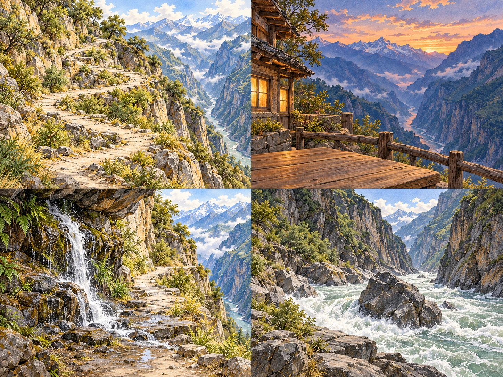
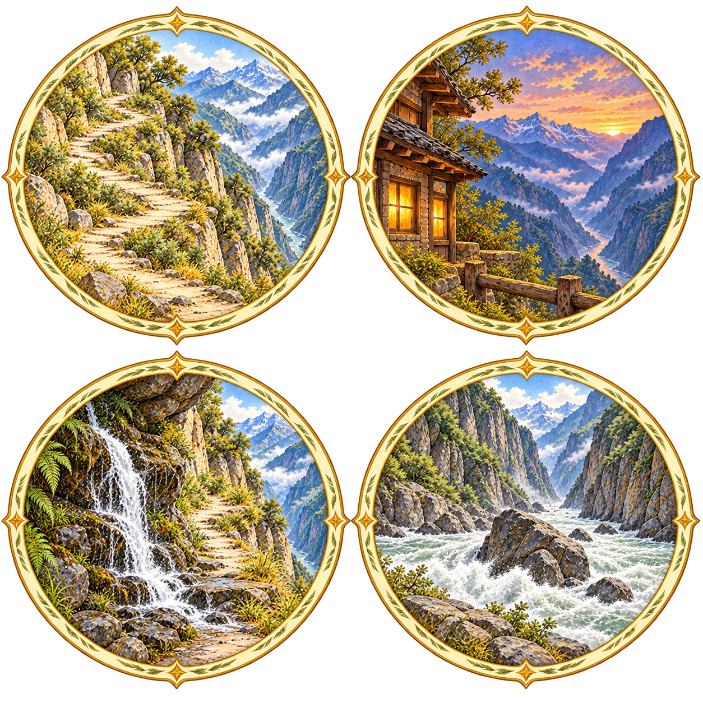

第一天 · 二十八道拐
画一个 S 弯转过山弯
沿浅色山路，画出一个 S 弯。
画好山路，松手看小人沿路上山，再看峡谷里的金沙江激流。可以中途抬手，接着画；看完自动获得圆形徽章。
体验画山路 →完成后自动入帐
山弯初见
过了这道弯，江已在脚下。
虎跳峡 · 高路与中虎跳支线
沿着山路慢慢走。偶尔停下来，画一弯山路、翻几张画片，
把亲手完成的风景收进圆形手帐。
四个小游戏已接入本地，主地图仍用 2D 示意图，人物沿用现在的 Q 版。下方可单独体验，也可从桥头出发。当前未测试。
第一天 · 二十八道拐
画一个 S 弯沿浅色山路，画出一个 S 弯。
画好山路，松手看小人沿路上山，再看峡谷里的金沙江激流。可以中途抬手，接着画；看完自动获得圆形徽章。
体验画山路 →完成后自动入帐
过了这道弯，江已在脚下。
第一天傍晚 · 中途客栈
找两对翻开四张画片，找到两对相同的风景。
山影与窗灯藏在桌上的画片里。配对后灯火渐亮，收好记忆，再接入过夜与清晨。
体验客栈画片 →完成后自动入帐
山色慢慢暗下去，一扇窗亮了。
第二天 · 龙洞瀑布附近
涂一页蘸一点颜色，把两处留白涂上山色。
岩壁与草木只留两块大画面，自由选色，不用描边。水声陪着落笔，留下自己涂过的颜色。
体验山色涂绘 →完成后自动入帐
水落在石上，山色落在纸上。
可选支线 · 中虎跳江边
取一景拖动圆形取景窗，把巨石和白浪一起装进去。
松手自动拍下，留下当时的构图和水流。不调焦距，不连拍，不选片；回程不重复领奖。
体验江边取景 →完成后自动入帐
这一次，江就在眼前。
让发现和收藏连起来
地图只显示地点图标与名称。真实照片和小游戏分别触发，未完成不发徽章。只走高路也有完整的旅程。


手绘由内置图像生成制作，不代替实拍或地点考据。本页展示设计与各单段入口，实际关卡在独立手绘页展开；完成后会写入本机旅行手帐。功能与衔接已实现，鼠标、触屏、画面和声音尚未验收。